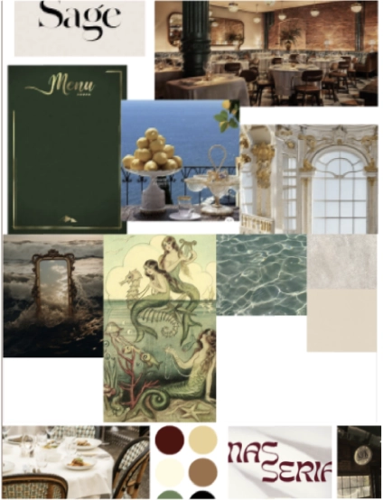

GRUNDLIG
GENDE
INDHOLD
Grundlæggende indhold
I Tema 5 blev vi introduceret til indholdsproduktion, og så lærte vi at lave lottiefiles ved hjælp af adobe
after
effects. Det var også første gan vi arbejdede i grupper.
første del var vi i par, og den sidste endelige hjemmeside var vi fem personer. Derfor blev vi også
intrdoseret til
forskellige projektstyringsværktøjerne.
Disse værktøjer bestod af SCRUM og Trello, som hjalp med at give overblik over gruppe projektet, og give
struktur samt
øge effektiviteten
Opgaven var delt op i to dele:den første opgave skulle vi lave et passionsite, og det andet skulle vi lave
et redesign
af en eksisternde hjemmeside for en virksomhed. Første del var der fokus på video produktion
PASSION SITE
opgave
I opgaven “PASSION SITE” skulle vi vælge en person med en passion, og lave et potræt af denne person og
vedkommens
passion. Mig og min gruppe valgte at lave den om undertegnet selv, altså mig. Vi valgte at lave en video om
mig og min
passion for tattoveringer. vi filmede og lavede interview spørgsmål sammen, men efter dette, blev opgaven
indiviindividuel.
Til videoen brugte vi en iPhone, stabaliser og en clip-on mikrofon. Vi optog video og lyd på to forskellige
enheder, for
at sikre bedst mullig lyd, og gøre redigerings arbejdet nemmere. Derudover optog vi også b-rolls, de
fungerede som
stemnings sættende optagelser.
Derefter startede redigerings arbejdet, hvilket vi gjorde i Premiere Pro og Audition.
I mit færdige website andvente jeg et videotag i html.
VIRKSOM-
HEDS
SITE
gruppeprojekt
I virksomheds sitet, startede vi med at projektstyringsværktøjerne op, vi startede vores Trello og fik lagt
nogle to-do
opgaver op, valgte dagens SCRUM master, og så gik vi igang med at lave brainstom over hvilke virksomhed vi
skulle vælge.
vi ender med at vælger en reasturant. vi går hurtigt igang med at annalysere deres hjemmesiden, for at få et
overblik
over hvad vi vil gøre for at fobedre siden. dette gør ved at lave et styletile ud fra deres hjemmeside og et
sitemab.
derudover fandt vi de vigtigste userstorries, og lavede funktionalitetsliste, som hjalp os med at finde frem
til hvad vi
ville have ekstra fokus på. Vi satte en aftele op med ejerne, om at komme og skyde nogle videoer og billeder
som indhold
til hjemmesiden. Vi fik også fundet frem til målgruppen og virksomhedens foretnings koncept
PROCESS

prosessen
Vi startede alle med at lave et moodbord hver, og derefter samle det, for at finde frem til fælles ønsker af
estetik. Vi
lavede en opdateret version af stiletyle hvor vi fastlagde en farvepalette, font, og indhold. Vi lavede
crazy 8 ud fra
fosiden alle sammen for at finde frem til hvordan vi ville have hjemmesiden skulle starte på. her der
landede vi på at
have en video-hero som forside, og gik derfor igang med at klippe en stemnings video sammen på primere pro,
som vi lagde
ind som et videtag, hvor vi fik videon til at køre på loop. Da vi havde videoen klar startede vi med at lave
lofi og
hifi wireframes.
Kodning
For at arbejde effektivt sammen om kodningen, brugte vi GitHub, dette gjorde det nemmere at samarbejde om
kodningen, vi
uddeligerede sider vi hverisær skulle kode, og så begyndte vi på kodningen.